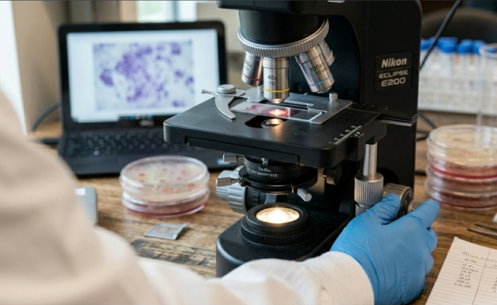

Every cultivator deals with contamination. It's not a question of if, but when — and how you respond determines whether you lose a jar, a batch, or a season. Over the past two years, we've logged every contamination event in our lab. This article is a visual guide to the most common contaminants we see, what they look like under the microscope, and our standard quarantine protocol.

Lab microscope setup used for contaminant identification and spore analysis.
Trichoderma (Green Mold)
Trichoderma is the most common contaminant in mushroom cultivation — and the most destructive. It appears as a white mycelium that closely resembles mushroom mycelium in its early stages. Within 48–72 hours, it develops a distinctive green spore mass that spreads rapidly through the substrate.
Under the microscope: Conidiophores branch in a characteristic pyramidal pattern. Conidia (spores) are round, smooth, and bright green. Hyphae are thin (2–4 µm) and highly branched.
Response: Isolate immediately. Do not open contaminated bags or jars in the lab. Dispose in sealed bags — Trichoderma spores remain viable for months and are easily airborne.
Aspergillus
Aspergillus appears as a powdery mold that ranges from yellow-green to dark brown depending on the species. It's particularly common in grain spawn that was over-hydrated or improperly sterilized. Unlike Trichoderma, Aspergillus prefers dryer conditions and lower water activity.
Under the microscope: Conidiophores are long, upright, and terminate in a swollen vesicle covered in phialides. Conidia form in chains radiating from the vesicle. The overall structure resembles a dandelion head.
Response: Aspergillus spores can be allergenic and, in some species, produce mycotoxins. Wear a mask when handling. Dispose immediately and review grain hydration protocol.
Bacillus (Wet Spot / Sour Rot)
Bacillus contamination appears as a glossy, wet-looking patch on grain that has a sour, fermenting smell. The grain turns a dark brown or reddish color, and the texture becomes slimy. It's caused by endospore-forming bacteria that survive incomplete sterilization.
Under the microscope: Rod-shaped cells (3–5 µm), often in chains. Endospores appear as bright, oval refractile bodies within the cells when viewed under phase contrast. Gram-positive.
Response: This is a sterilization failure, not a handling error. Review autoclave cycle times, pressure, and grain moisture content. Jars with Bacillus should be autoclaved before disposal to kill endospores.
Pin Mold (Mucor / Rhizopus)
Pin mold appears as a fuzzy gray or white growth that rapidly develops tiny black pinhead-like structures. It grows incredibly fast — often covering the surface of a jar or agar plate within 24–48 hours.
Under the microscope: Broad, non-septate hyphae (6–15 µm wide). Sporangiophores grow upright and terminate in a round sporangium filled with spores. Rhizopus shows characteristic rhizoids at the base of the sporangiophores.
Response: Pin mold is usually the result of airborne spores landing on exposed grain or agar during inoculation. Review sterile technique — particularly the use of flow hoods and benchtop surface sterilization.
Our Quarantine Protocol
When contamination is detected at any stage, we follow a strict quarantine process to protect the rest of the lab:
- Identify. Note the date, strain, substrate lot, and shelf position. Photograph through the bag or jar. If safe, sample for microscopy.
- Isolate. Move the contaminated item to our quarantine container — a sealed plastic tote with a HEPA filter vent, kept in a separate room.
- Investigate. Check adjacent jars or bags for early signs of the same contaminant. Review the production log for that batch.
- Dispose. Autoclave the contaminated item before discarding. Never open a contaminated jar or bag inside the lab area.
- Correct. Based on the contaminant identification, adjust the relevant process — sterilization cycle, grain hydration, pasteurization temperature, or sterile technique.
Prevention Is Everything
The best contamination protocol is one you never have to use. In our lab, we focus on three areas: master culture quality (starting from clean cultures reduces the contamination chain), sterilization verification (we use biological indicators — Geobacillus stearothermophilus spore strips — in every autoclave run), and environmental monitoring (settle plates placed around the lab to track airborne spore loads week over week).
Contamination is a learning tool, not a failure. Every event teaches us something about our process. Keep a log, take photos, and share what you find.